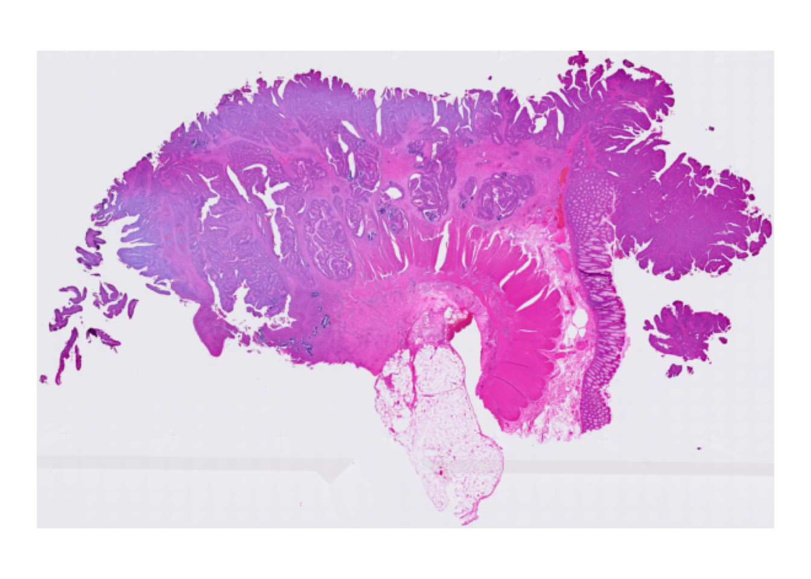
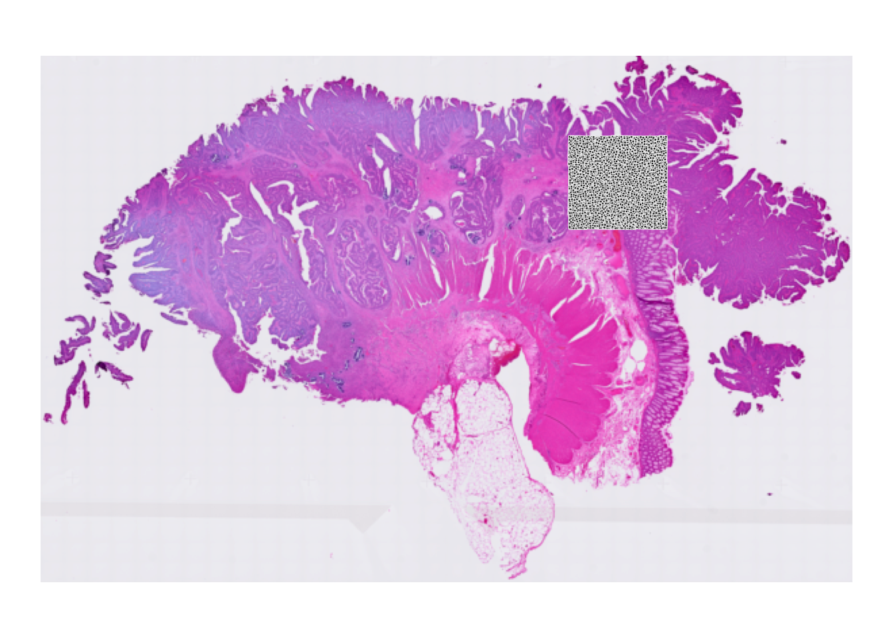
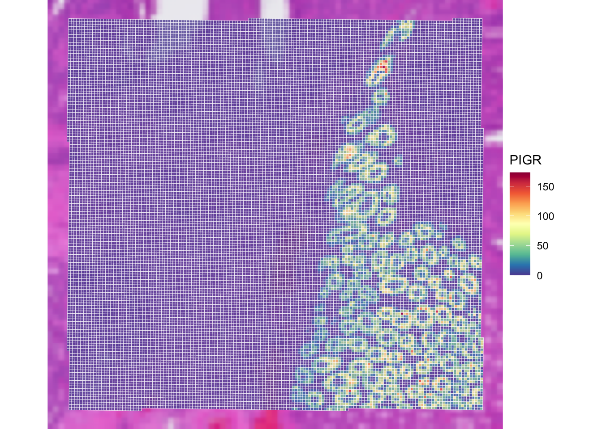
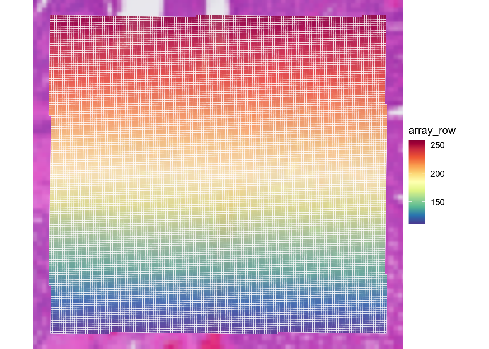
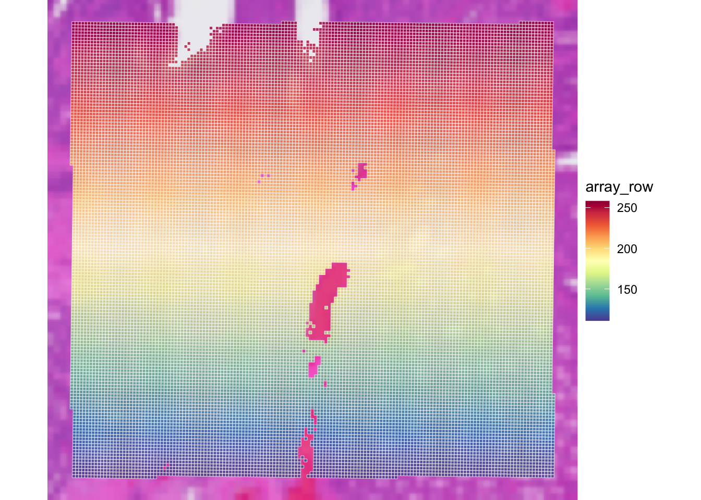

Exercise 1A: SpatialExperiment - VisiumHD binned
Learning Objectives
By the end of this exercise, you will be able to:
- Understand the structure of a
SpatialExperimentobject. - Access and interpret
spatialCoordsandimgData. - Inspect assay, row, and column metadata.
- Perform basic subsetting operations on
SpatialExperimentobjects. - Visualize Visium HD binned data on the tissue image.
Libraries
Data for the course
We will work on a human colorectal cancer study by Oliveira et al. The dataset contains normal adjacent tissue (NAT) and colorectal carcinoma (CRC) from 5 patients. We will focus on data from a patient called “P2”, available from the 10X website.
For this sample, the study provides Visium HD data at 2, 8, and 16 um resolution and the per-cell output after cell segmentation. Matching Xenium data generated from serial sections of the same sample is also available and can be used for cross-platform comparisons.
In this exercise we will work with Visium HD data and focus on the “binned output” available as an output of the Space Ranger pipeline (version 3.0). The full output is very large, so for practical reasons we use a region of interest, selected to include an interesting part of the tissue, because it contains gland-like epithelial structures together with stromal or lower-density areas:
# Define region of interest (roi)
roi_visium <- c(
xmin = 49000,
xmax = 58000,
ymin = 7500,
ymax = 16000
)
roi_visium xmin xmax ymin ymax
49000 58000 7500 16000 Note: In Exercise 1B we focus on the matching Xenium dataset from a serial section of the same P2CRC sample, subsetted to an approximately matching region of interest.
Download P2 Visium HD data:
options(timeout = 600)
if (!dir.exists("data/Human_Colon_Cancer_P2/")) {
dir.create("data", showWarnings = FALSE)
download.file(
url = "https://intro-spatial-transcriptomics-training.s3.eu-central-1.amazonaws.com/Human_Colon_Cancer_P2.tar.gz",
destfile = "data/Human_Colon_Cancer_P2.tar.gz",
mode = "wb"
)
untar(
tarfile = "data/Human_Colon_Cancer_P2.tar.gz",
exdir = "data/"
)
file.remove("data/Human_Colon_Cancer_P2.tar.gz")
} else {
message("Data exists, please proceed to next steps!")
}We will first import the 16 um binned Visium HD output into a SpatialExperiment object:
# Import data into a SpatialExperiment object
spe <- TENxVisiumHD(
spacerangerOut = "data/Human_Colon_Cancer_P2/",
processing = "filtered",
format = "h5",
images = "lowres",
bin_size = "016"
) |>
import()
# Use unique Symbol for rownames
rownames(spe) <- uniquifyFeatureNames(
ID = rowData(spe)$ID,
names = rowData(spe)$Symbol
)
speclass: SpatialExperiment
dim: 18085 137051
metadata(2): resources spatialList
assays(1): counts
rownames(18085): SAMD11 NOC2L ... MT-ND6 MT-CYB
rowData names(3): ID Symbol Type
colnames(137051): s_016um_00052_00082-1 s_016um_00010_00367-1 ...
s_016um_00037_00193-1 s_016um_00144_00329-1
colData names(6): barcode in_tissue ... bin_size sample_id
reducedDimNames(0):
mainExpName: Gene Expression
altExpNames(0):
spatialCoords names(2) : pxl_col_in_fullres pxl_row_in_fullres
imgData names(4): sample_id image_id data scaleFactorThen, we will subset it to the region of interest. The coordinates are in the native Visium HD image coordinate system returned by spatialCoords().
# Explore the spatial coordinates
head(spatialCoords(spe)) pxl_col_in_fullres pxl_row_in_fullres
s_016um_00052_00082-1 45434.83 19379.250
s_016um_00010_00367-1 62050.15 22051.927
s_016um_00163_00399-1 64033.98 13137.745
s_016um_00238_00388-1 63447.51 8747.905
s_016um_00144_00175-1 50935.66 14076.263
s_016um_00347_00254-1 55702.21 2278.720# Subset to the region of interest based on spatial coordinates
spe <- spe[, spatialCoords(spe)[, 1] >= roi_visium[["xmin"]] &
spatialCoords(spe)[, 1] <= roi_visium[["xmax"]] &
spatialCoords(spe)[, 2] >= roi_visium[["ymin"]] &
spatialCoords(spe)[, 2] <= roi_visium[["ymax"]]]
speclass: SpatialExperiment
dim: 18085 22419
metadata(2): resources spatialList
assays(1): counts
rownames(18085): SAMD11 NOC2L ... MT-ND6 MT-CYB
rowData names(3): ID Symbol Type
colnames(22419): s_016um_00144_00175-1 s_016um_00204_00145-1 ...
s_016um_00231_00291-1 s_016um_00193_00227-1
colData names(6): barcode in_tissue ... bin_size sample_id
reducedDimNames(0):
mainExpName: Gene Expression
altExpNames(0):
spatialCoords names(2) : pxl_col_in_fullres pxl_row_in_fullres
imgData names(4): sample_id image_id data scaleFactorHave a look at the paper and the 10X Genomics website.
- How are transcript molecules measured in Visium HD?
- What does the 16 um binned output represent?
- Why might it be a good idea to use 16 um bins instead of the smallest 2 um bins? What might be the issues?
- Which report from the Space Ranger tool can you inspect to get an overview of sample and processing quality?
The measurements of RNA molecules are indirect: targeted probe pairs are hybridized, ligated, captured on the Visium HD slide, and sequenced. The binned Visium HD outputs aggregate molecules over square spatial bins.
The smallest Visium HD bins are 2x2 um. Larger bins are pools of neighboring 2 um bins: an 8 um bin aggregates 16 smaller bins, and a 16 um bin aggregates 64 smaller bins. This increases the number of UMIs per gene and per bin and reduces the sparsity of the data. This is of course at the cost of spatial resolution, and it should be kept in mind that a 16 um may captures material from multiple cells. For this course, 16 um bins are a practical compromise. They make the object smaller and faster to plot and process while still preserving tissue-level spatial structure.
The Space Ranger web summary and metrics summary are useful reports for checking processing quality before using the sample in the course.
Exploring the object
In this exercise, we will inspect the SpatialExperiment class used to store the data. SpatialExperiment extends SingleCellExperiment, classically used for scRNA-seq analysis, so familiar accessors such as colData(), rowData(), assay(), and reducedDims() still apply.

SpatialExperiment class structureNote: The practical Exercise 1B uses a Xenium dataset stored into a SpatialFeatureExperiment class, which is an extension of the SpatialExperiment incorporating geometries, allowing to store cell segmentation polygons for example.
Check the outputs of:
colData()rowData()assay()reducedDims()
Then check the spatial-specific accessors:
Questions:
- What kind of data is stored in each slot?
- How many bins and genes are retained in the subsetted
speobject? - Are all retained bins within the tissue area?
- Bonus: what class is used to store the UMI count matrix? What is special about it?
The slot colData contains metadata for each spatial bin:
colData(spe) |> head()DataFrame with 6 rows and 6 columns
barcode in_tissue array_row array_col
<character> <integer> <integer> <integer>
s_016um_00144_00175-1 s_016um_00144_00175-1 1 144 175
s_016um_00204_00145-1 s_016um_00204_00145-1 1 204 145
s_016um_00237_00273-1 s_016um_00237_00273-1 1 237 273
s_016um_00191_00159-1 s_016um_00191_00159-1 1 191 159
s_016um_00245_00233-1 s_016um_00245_00233-1 1 245 233
s_016um_00116_00279-1 s_016um_00116_00279-1 1 116 279
bin_size sample_id
<character> <character>
s_016um_00144_00175-1 016 sample01
s_016um_00204_00145-1 016 sample01
s_016um_00237_00273-1 016 sample01
s_016um_00191_00159-1 016 sample01
s_016um_00245_00233-1 016 sample01
s_016um_00116_00279-1 016 sample01ncol(spe)[1] 22419We can check whether bins are covered by tissue:
colData(spe) |>
as.data.frame() |>
group_by(in_tissue) |>
summarise(number = n())# A tibble: 1 × 2
in_tissue number
<int> <int>
1 1 22419The slot rowData contains gene metadata:
rowData(spe) |> head()DataFrame with 6 rows and 3 columns
ID Symbol Type
<character> <character> <factor>
SAMD11 ENSG00000187634 SAMD11 Gene Expression
NOC2L ENSG00000188976 NOC2L Gene Expression
KLHL17 ENSG00000187961 KLHL17 Gene Expression
PLEKHN1 ENSG00000187583 PLEKHN1 Gene Expression
PERM1 ENSG00000187642 PERM1 Gene Expression
HES4 ENSG00000188290 HES4 Gene Expressionnrow(spe)[1] 18085The assay stores the UMI counts matrix:
assay(spe)<18085 x 22419> sparse DelayedMatrix object of type "integer":
s_016um_00144_00175-1 ... s_016um_00193_00227-1
SAMD11 0 . 0
NOC2L 0 . 0
KLHL17 0 . 0
PLEKHN1 0 . 0
PERM1 0 . 0
... . . .
MT-ND4L 1 . 0
MT-ND4 2 . 8
MT-ND5 0 . 1
MT-ND6 0 . 0
MT-CYB 0 . 2class(assay(spe))[1] "DelayedMatrix"
attr(,"package")
[1] "DelayedArray"The DelayedArray class allows to store out-of-memory representations of count matrices, which are saved as .h5 files on the disk. This is very useful for efficient processing of large datasets (100,000s of cells or spots)
The reducedDims slot is empty at this stage:
reducedDims(spe)List of length 0
names(0): The spatialCoords slot stores image coordinates for each bin:
spatialCoords(spe) |> head() pxl_col_in_fullres pxl_row_in_fullres
s_016um_00144_00175-1 50935.66 14076.263
s_016um_00204_00145-1 49228.67 10548.476
s_016um_00237_00273-1 56729.41 8718.557
s_016um_00191_00159-1 50036.54 11318.543
s_016um_00245_00233-1 54399.11 8220.724
s_016um_00116_00279-1 56989.11 15791.601The imgData slot lists the linked tissue image and scale factor:
imgData(spe)DataFrame with 1 row and 4 columns
sample_id image_id data scaleFactor
<character> <character> <list> <numeric>
1 sample01 lowres #### 0.00797342The image can be exported as a raster:
Visualizing the tissue region
To get a visual overview, we use plotVisium() function from the ggspavis package. First we plot the tissue image without bins:
plotVisium(spe, spots = FALSE)
Then we overlay the 16 um bins to see which part of the tissue was covered by the array:
plotVisium(spe, point_shape = 22, point_size = 0.5)
Why do we see only a specific region of the slide?
The full Visium HD output is much larger than needed for this introductory exercise. At the start of this exercise, we subsetted the object to one representative tissue region so that it remains fast to plot and process.
It is possible to colour bins according to a gene or a column in colData, for example PIGR. We renamed the rows to gene symbols after import, which is why we can refer to this marker as "PIGR" rather than by its Ensembl ID. At this stage we plot the number of UMIs since log-normalized counts will be introduced later in the course.
plotVisium(spe,
annotate = "PIGR",
assay = "counts",
zoom = TRUE,
point_size = 1,
point_shape = 22
)
Check the usage of plotVisium with ?plotVisium. Create a plot that zooms into the selected region and colors the bins according to column array_row.
In which slot is array_row stored, and what does it represent?
The column array_row is stored in colData. It represents the row position of each bin in the Visium HD grid, so the plot shows a smooth coordinate gradient across the selected region. This is technical spatial metadata, not a gene expression pattern.
plotVisium(
spe,
annotate = "array_row",
zoom = TRUE,
point_shape = 22
)
Retain only observations that map to tissue
Subset the SpatialExperiment object to retain only bins that are within the tissue area.
How many bins were present in spe, and how many are left after selecting bins overlapping the tissue?
table(colData(spe)$in_tissue)
1
22419 1%
32 2%
50 sub
FALSE TRUE
453 21966 plotVisium(
spe[, sub],
annotate = "array_row",
zoom = TRUE,
point_shape = 22
)
Filtering on the library size thus seems to remove a few”empty” bins not overlapping the tissue. Let’s keep this in mind for the Exercise 2 where we perform QC filtering!
Save the object
We save the filtered SpatialExperiment object for the next steps. Remember that the count matrix is stored as an out-of-memory DelayedArray object, so the object cannot be saved with the usual saveRDS command. The following command saves the assay matrices as .h5 files along with the SpatialExperiment object as an .rds file.
dir.create("results/day1", showWarnings = FALSE, recursive = TRUE)
saveHDF5SummarizedExperiment(spe,
dir = "results/day1", prefix = "01.1a_spe_", replace = TRUE,
chunkdim = NULL, level = NULL, as.sparse = NA,
verbose = NA
)Clear your environment:
Key Takeaways:
-
SpatialExperimentis a convenient container for spot- or bin-level spatial transcriptomics data. - Visium HD binned outputs can be represented naturally as a
SpatialExperiment. - Course subsets are chosen to balance biological realism with practical runtime.